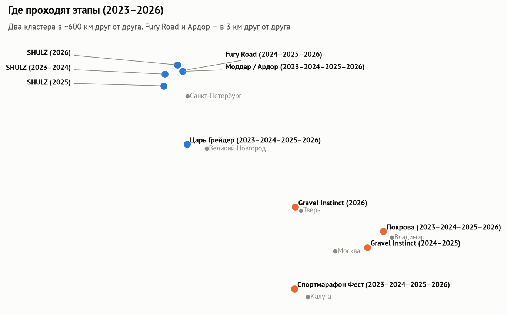
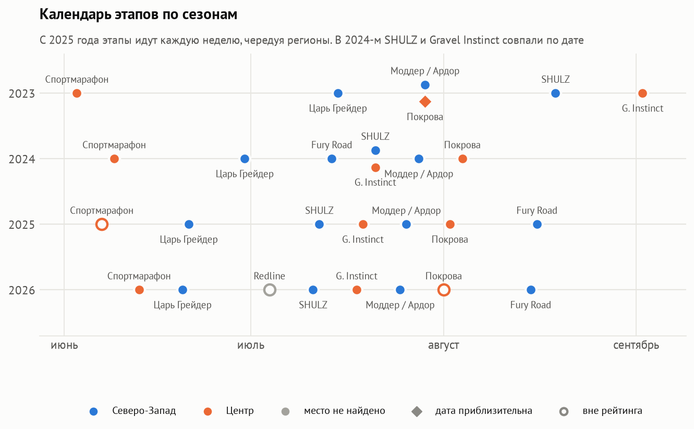
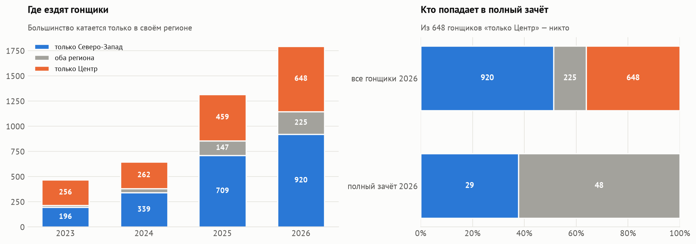
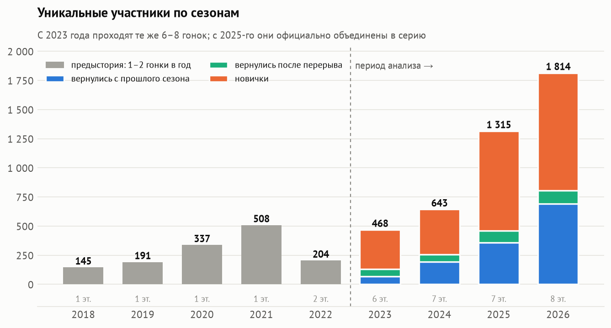
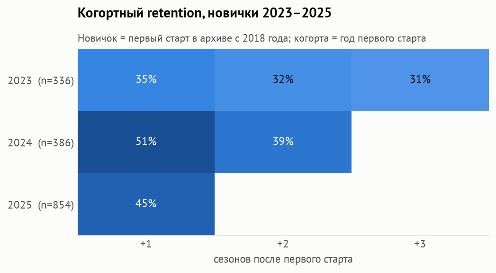
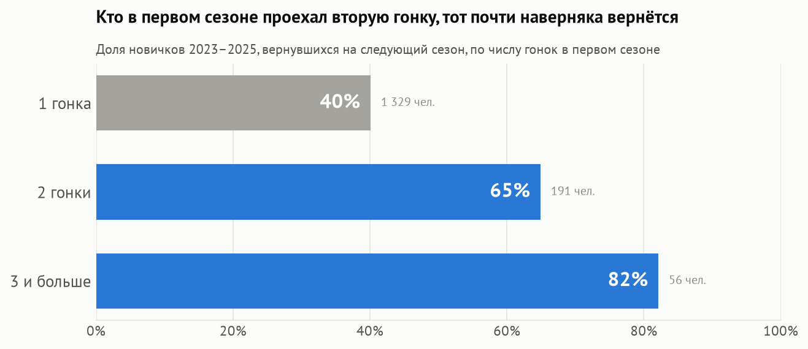
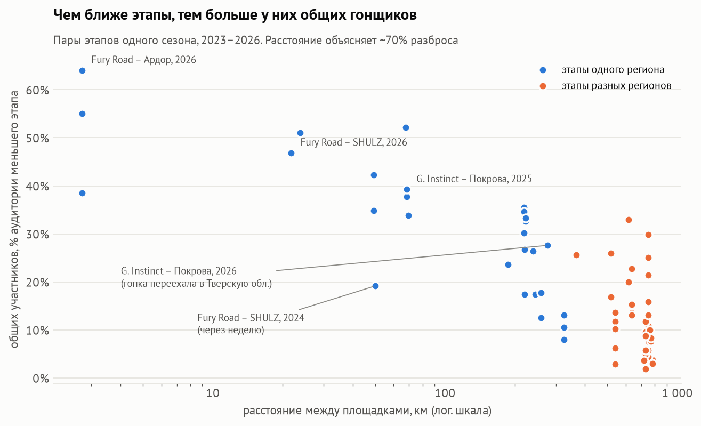
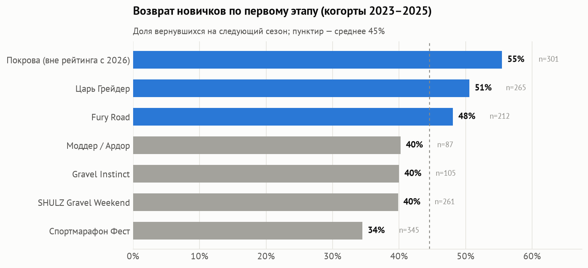
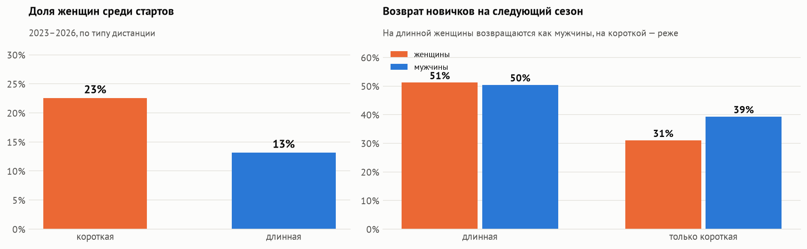

Рост, удержание, aha-момент, календарь и география этапов — по открытому архиву протоколов
Подготовил: Царегородский Александр · аналитик данных · 2026
Заказчик — объединение организаторов серии. Решение: куда вкладывать усилия между сезонами — в привлечение новичков, в их удержание, в календарь или в связку этапов.
Почему с 2023 года: до этого — 1–2 гонки в год; с 2023-го проходит тот же набор из 6–8 гонок, а в 2025-м они официально объединены в серию. Места и даты этапов собраны вручную по сайтам и каналам организаторов. Стек: Python, DuckDB + SQL, statsmodels, дашборд.



Полный зачёт — 4 рейтинговые гонки, а рейтинговых этапов 4 на Северо-Западе и 2 в Центре. В 2026 году в полном зачёте 65 гонщиков Северо-Запада и 5 из Центра, хотя в Центре 41% аудитории.



| Фактор | OR: год | OR: год + этап |
|---|---|---|
| 2+ старта | 2,69 [1,98–3,64] | 2,92 [2,12–4,03] |
| Длинная дистанция | 1,50 [1,20–1,87] | 1,27, незначимо |
| Последняя четверть | 0,68 [0,54–0,85] | 0,67 [0,53–0,84] |
| Женщина | 0,84, незначимо | 0,83, незначимо |
Логистическая регрессия. Вторая модель исключает объяснение «дело в этапе, а не в числе стартов». Самоотбор по мотивации в протоколах не виден, поэтому нужен тест.
| Дизайн A/B-теста | |
|---|---|
| Воздействие | промокод на следующий этап своего региона для финишёров первого старта |
| Основная метрика | доля новичков с 2+ стартами в сезоне (база 19,1%) |
| Вторичная / защитная | возврат в след. сезоне / выручка с новичка |
| Мощность | ~850 новичков за сезон, 50/50 → MDE ≈ 9 п.п.; для +5 п.п. — два сезона |



Женщины — 23% стартов на короткой дистанции и 13% на длинной. На длинной они возвращаются так же, как мужчины (51% и 50%), на короткой — реже: 31% против 39%. Возраст в протоколах не публикуется, поэтому его проанализировать нельзя.
| Что | Вывод |
|---|---|
| Рост | Аудитория ×3,9 (468 → 1 814), 1,54 старта на гонщика; 38% аудитории 2026 года — вернувшиеся |
| Удержание | На следующий сезон возвращается 35–51% новичков |
| Aha-момент | Вторая гонка в первом сезоне: возврат 40% → 65%, шансы ×2,7–2,9 с поправкой на год и этап |
| Регионы | Два кластера в 600 км; в полном зачёте 65 гонщиков Северо-Запада и 5 из Центра |
| Календарь | Общую аудиторию этапов определяет расстояние; этапы одного региона через неделю делят аудиторию хуже |
| Входы и дистанции | Покрова и Царь Грейдер лучше всех приводят новичков; короткая дистанция — отдельный продукт |
| Женщины | 17–19% участников; на короткой дистанции возвращаются реже мужчин |
A/B-тест промокода на следующий этап своего региона для финишёров первой гонки.
«Север» и «Центр» с порогом 2 этапа; вернуть Покрову в рейтинг — в Центре станет 3 этапа.
Сохранить чередование регионов: этапы одного региона не чаще раза в 2 недели, без совпадений дат.
Отдельный продукт: удержание, особенно у женщин (31% против 39% у мужчин).
Перенести практики Покровы и Царь Грейдера на остальные этапы.
Сезон онлайн-гонок в Strava для других регионов (например, Поволжье); победитель получает бесплатный слот на этап РГС.
Ограничения. Гонщики сведены по имени, тёзки ~0,3%. Сходы и неявки есть не во всех протоколах. Часть координат и одна дата приблизительны. Нет возраста, места жительства и цены слота. Рекомендации — гипотезы для проверки, а не доказанная причинность.